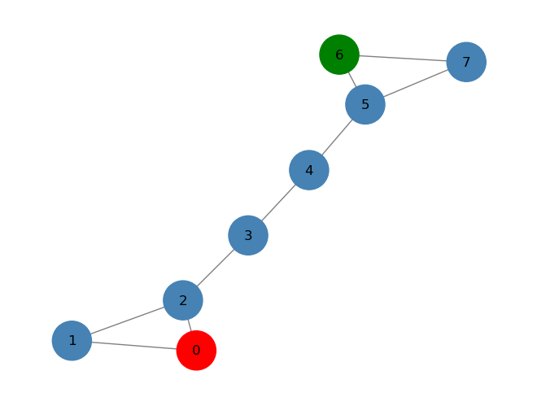
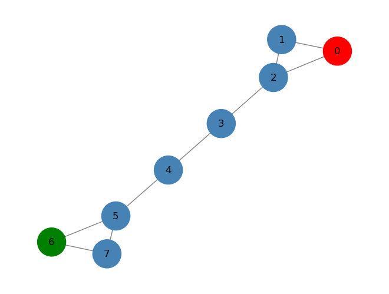

Utility graph plot matrix#
import matplotlib.pyplot as plt
def draw_graph(G, node_names={}, nodes_label=[], node_size=900):
pos_nodes = nx.spring_layout(G)
col = {0:"steelblue",1:"red",2:"green"}
colors = [col[x] for x in nodes_label]
nx.draw(G, pos_nodes, with_labels=True, node_color=colors, node_size=node_size, edge_color='gray',
arrowsize=30)
pos_attrs = {}
for node, coords in pos_nodes.items():
pos_attrs[node] = (coords[0], coords[1] + 0.08)
plt.axis('off')
axis = plt.gca()
axis.set_xlim([1.2*x for x in axis.get_xlim()])
axis.set_ylim([1.2*y for y in axis.get_ylim()])
plt.show()
Label propagation#
import networkx as nx
G = nx.barbell_graph(m1=3, m2=2)
nodes_label = [0 for x in range(len(G.nodes()))]
nodes_label[0] = 1
nodes_label[6] = 2
draw_graph(G, nodes_label=nodes_label, node_size=1200)

Degree matrix#
import numpy as np
from numpy.linalg import inv
D = [G.degree(n) for n in G.nodes()]
D = np.diag(D)
D
array([[2, 0, 0, 0, 0, 0, 0, 0],
[0, 2, 0, 0, 0, 0, 0, 0],
[0, 0, 3, 0, 0, 0, 0, 0],
[0, 0, 0, 2, 0, 0, 0, 0],
[0, 0, 0, 0, 2, 0, 0, 0],
[0, 0, 0, 0, 0, 3, 0, 0],
[0, 0, 0, 0, 0, 0, 2, 0],
[0, 0, 0, 0, 0, 0, 0, 2]])
Proximity matrix#
A = inv(D)*nx.to_numpy_matrix(G)
A
matrix([[0. , 0.5 , 0.5 , 0. , 0. ,
0. , 0. , 0. ],
[0.5 , 0. , 0.5 , 0. , 0. ,
0. , 0. , 0. ],
[0.33333333, 0.33333333, 0. , 0.33333333, 0. ,
0. , 0. , 0. ],
[0. , 0. , 0.5 , 0. , 0.5 ,
0. , 0. , 0. ],
[0. , 0. , 0. , 0.5 , 0. ,
0.5 , 0. , 0. ],
[0. , 0. , 0. , 0. , 0.33333333,
0. , 0.33333333, 0.33333333],
[0. , 0. , 0. , 0. , 0. ,
0.5 , 0. , 0.5 ],
[0. , 0. , 0. , 0. , 0. ,
0.5 , 0.5 , 0. ]])
Label propagation implemenation#
import numpy as np
import networkx as nx
from numpy.linalg import inv
from abc import ABCMeta, abstractmethod
from sklearn.base import BaseEstimator, ClassifierMixin
from sklearn.utils.multiclass import check_classification_targets
from sklearn.utils.validation import check_is_fitted, _deprecate_positional_args
class GraphLabelPropagation(ClassifierMixin, BaseEstimator, metaclass=ABCMeta):
"""Graph label propagation module.
Parameters
----------
max_iter : int, default=30
Change maximum number of iterations allowed.
tol : float, default=1e-3
Convergence tolerance: threshold to consider the system at steady
state.
"""
@_deprecate_positional_args
def __init__(self, max_iter=30, tol=1e-3):
self.max_iter = max_iter
self.tol = tol
def predict(self, X):
"""Performs inductive inference across the model.
Parameters
----------
X : A networkx array.
The data matrix.
Returns
-------
y : ndarray of shape (n_samples,)
Predictions for input data.
"""
probas = self.predict_proba(X)
return self.classes_[np.argmax(probas, axis=1)].ravel()
def predict_proba(self, X):
"""Predict probability for each possible outcome.
Compute the probability estimates for each single node in X
and each possible outcome seen during training (categorical
distribution).
Parameters
----------
X : A networkx array.
Returns
-------
probabilities : ndarray of shape (n_samples, n_classes)
Normalized probability distributions across
class labels.
"""
check_is_fitted(self)
return self.label_distributions_
def _validate_data(self, X, y):
if not isinstance(X, nx.Graph):
raise ValueError("Input should be a networkX graph")
if not len(y) == len(X.nodes()):
raise ValueError("Label data input shape should be equal to the number of nodes in the graph")
return X, y
@staticmethod
def build_label(x,classes):
tmp = np.zeros((classes))
tmp[x] = 1
return tmp
def fit(self, X, y):
"""Fit a semi-supervised label propagation model based
on the input graph G and corresponding label matrix y with a dedicated marker value for
unlabeled samples.
Parameters
----------
X : A networkX array.
y : array-like of shape (n_samples,)
`n_labeled_samples` (unlabeled points are marked as -1)
All unlabeled samples will be transductively assigned labels.
Returns
-------
self : object
"""
X, y = self._validate_data(X, y)
self.X_ = X
check_classification_targets(y)
D = [X.degree(n) for n in X.nodes()]
D = np.diag(D)
# label construction
# construct a categorical distribution for classification only
unlabeled_index = np.where(y==-1)[0]
labeled_index = np.where(y!=-1)[0]
unique_classes = np.unique(y[labeled_index])
self.classes_ = unique_classes
Y0 = np.array([self.build_label(y[x], len(unique_classes))
if x in labeled_index else np.zeros(len(unique_classes)) for x in range(len(y))])
A = inv(D)*nx.to_numpy_matrix(G)
Y_prev = Y0
it = 0
c_tool = 10
while it < self.max_iter & c_tool > self.tol:
Y = A*Y_prev
#force labeled nodes
Y[labeled_index] = Y0[labeled_index]
it +=1
c_tol = np.sum(np.abs(Y-Y_prev))
Y_prev = Y
self.label_distributions_ = Y
return self
Label propagation execution#
glp = GraphLabelPropagation()
y = np.array([-1 for x in range(len(G.nodes()))])
y[0] = 1
y[6] = 0
glp.fit(G,y)
tmp = glp.predict(G)
print(glp.predict_proba(G))
draw_graph(G, nodes_label=tmp+1, node_size=1200)
[[0. 1. ]
[0.05338542 0.90006109]
[0.11845743 0.8081115 ]
[0.31951678 0.553297 ]
[0.553297 0.31951678]
[0.8081115 0.11845743]
[1. 0. ]
[0.90006109 0.05338542]]
Label spreading#
import networkx as nx
G = nx.barbell_graph(m1=3, m2=2)
nodes_label = [0 for x in range(len(G.nodes()))]
nodes_label[0] = 1
nodes_label[6] = 2
draw_graph(G, nodes_label=nodes_label, node_size=1200)

Degree matrix#
import numpy as np
from numpy.linalg import inv
D = [G.degree(n) for n in G.nodes()]
D = np.diag(D)
D
array([[2, 0, 0, 0, 0, 0, 0, 0],
[0, 2, 0, 0, 0, 0, 0, 0],
[0, 0, 3, 0, 0, 0, 0, 0],
[0, 0, 0, 2, 0, 0, 0, 0],
[0, 0, 0, 0, 2, 0, 0, 0],
[0, 0, 0, 0, 0, 3, 0, 0],
[0, 0, 0, 0, 0, 0, 2, 0],
[0, 0, 0, 0, 0, 0, 0, 2]])
Normalized graph Laplacian matrix#
from scipy.linalg import fractional_matrix_power
D_inv = fractional_matrix_power(D, -0.5)
L = D_inv*nx.to_numpy_matrix(G)*D_inv
L
matrix([[0. , 0.5 , 0.40824829, 0. , 0. ,
0. , 0. , 0. ],
[0.5 , 0. , 0.40824829, 0. , 0. ,
0. , 0. , 0. ],
[0.40824829, 0.40824829, 0. , 0.40824829, 0. ,
0. , 0. , 0. ],
[0. , 0. , 0.40824829, 0. , 0.5 ,
0. , 0. , 0. ],
[0. , 0. , 0. , 0.5 , 0. ,
0.40824829, 0. , 0. ],
[0. , 0. , 0. , 0. , 0.40824829,
0. , 0.40824829, 0.40824829],
[0. , 0. , 0. , 0. , 0. ,
0.40824829, 0. , 0.5 ],
[0. , 0. , 0. , 0. , 0. ,
0.40824829, 0.5 , 0. ]])
Label spreading implementation#
import numpy as np
import networkx as nx
from sklearn.preprocessing import normalize
from scipy.linalg import fractional_matrix_power
from sklearn.utils.multiclass import check_classification_targets
class GraphLabelSpreading(GraphLabelPropagation):
"""Graph label propagation module.
Parameters
----------
max_iter : int, default=30
Change maximum number of iterations allowed.
tol : float, default=1e-3
Convergence tolerance: threshold to consider the system at steady
state.
"""
@_deprecate_positional_args
def __init__(self, max_iter=30, tol=1e-3, alpha=0.6):
self.alpha = alpha
super().__init__(max_iter, tol)
def fit(self, X, y):
"""Fit a semi-supervised label propagation model based
on the input graph G and corresponding label matrix y with a dedicated marker value for
unlabeled samples.
Parameters
----------
X : A networkX array.
y : array-like of shape (n_samples,)
`n_labeled_samples` (unlabeled points are marked as -1)
All unlabeled samples will be transductively assigned labels.
Returns
-------
self : object
"""
X, y = self._validate_data(X, y)
self.X_ = X
check_classification_targets(y)
D = [X.degree(n) for n in X.nodes()]
D = np.diag(D)
D_inv = np.matrix(fractional_matrix_power(D,-0.5))
L = D_inv*nx.to_numpy_matrix(G)*D_inv
# label construction
# construct a categorical distribution for classification only
unlabeled_index = np.where(y==-1)[0]
labeled_index = np.where(y!=-1)[0]
unique_classes = np.unique(y[labeled_index])
self.classes_ = unique_classes
Y0 = np.array([self.build_label(y[x], len(unique_classes))
if x in labeled_index else np.zeros(len(unique_classes)) for x in range(len(y))])
Y_prev = Y0
it = 0
c_tool = 10
while it < self.max_iter & c_tool > self.tol:
Y = self.alpha*(L*Y_prev)+((1-self.alpha)*Y0)
it +=1
c_tol = np.sum(np.abs(Y-Y_prev))
Y_prev = Y
self.label_distributions_ = Y
return self
Label Spreading#
gls = GraphLabelSpreading(max_iter=1000)
y = np.array([-1 for x in range(len(G.nodes()))])
y[0] = 1
y[6] = 0
gls.fit(G,y)
tmp = gls.predict(G)
print(gls.predict_proba(G))
draw_graph(G, nodes_label=tmp+1, node_size=1200)
[[0.00148824 0.50403871]
[0.00148824 0.19630098]
[0.00471728 0.18369265]
[0.01591722 0.05001252]
[0.05001252 0.01591722]
[0.18369265 0.00471728]
[0.50403871 0.00148824]
[0.19630098 0.00148824]]